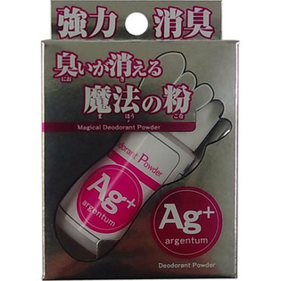

返回列表
产品名称：臭いが消える魔法の粉Ａｇ

グリコケミカル 臭いが消える魔法の粉Ａｇ １３ｇ
メーカー グリコケミカル
JANコード 4571162874472
商品の特徴
洗えないブーツや１日履き続けた革靴、パンプス等にふりかけるだけで頑固な臭いを強力に消臭します。
成分・分量
【成分】
天然タルク、ミョウバン、酸化亜鉛、硝酸銀
用法及び用量
【使用方法】
１．靴の中全体にいきわたるように粉を３～５回程度振りかけてから靴の中に指で広げてから靴を履いてください。
２．１日１回を目安に再度１を行うことで長時間消臭が行えます。
３．同じ靴を連日履かない場合は、履く当日に再度１を行ってください。
※靴下に粉が付着する場合がございますのでご注意ください。